Next: Proposal for htc, Up: (dir) [Contents]
This manual is for program, version version.
| • Proposal for htc : | Proposal written by Brenton Mark Rossow | |
| • Project team members : | Project team member’s information | |
| • material : | some pictures and a video |
Next: Project team members, Previous: Top, Up: Top [Contents]
My name is Brenton Mark Rossow and I am a Film and Video/ Photomedia student at Edith Cowan University (ECU), Perth Western Australia. I first visited Shanghai in January 2016 with twenty ECU students as part of a study tour organized through University of Shanghai Science and Technology (USST) and I’m currently doing an artist’s residence at USST. During our month long study tour our group held two photography exhibitions in Shanghai in conjunction with USST’s staff and students. These exhibitions documented life in Shanghai through the eyes of ECU’s Photomedia students and were also exhibited in Perth Western Australia.
It is my intention to hold two exhibitions in Shanghai in March or April 2017 and a further two exhibitions in Perth Australia in late 2017, early 2018. These exhibitions will be held together with Lianxi Zhang, a mixed media artist and lecturer at USST, and Harrison See, a postgraduate visual arts student from ECU, who is currently doing an artist’s residency in Xiamen, China.
The work in the exhibition will focus upon the relationships humans have with the natural world. Liangxi Zhang’s video installations are concerned with the impact humans unknowingly have upon insects who must overcome great obstacles to cross the road. Harrison’s paintings reflect upon how people are connected with the landscape. And my work will show the peculiar objects people abandon in the Australian bush, such as televisions, cars, microwaves, and other household items.
This exhibition intends to strength ties between Australian and Chinese artists. USST and ECU have collaborated artistically for over a decade and supported each other in numerous projects. Our exhibition is a continuation of this close relationship and will present work of the highest standard, which showcases this important intercultural relationship.
I request assistance from HTC in the development of this project in the form of helping to design a successful virtual reality application that will support this exhibition. The photos of abandoned objects in the Australian bush would greatly benefit from the latest VR technology accompanied by an ambient soundtrack.
I would like to provide HTC with 84 photographs, an ambient soundtrack, and a music video, which could be adapted to HTC’s VR equipment. This could then be showcased at an exhibition at E-gallery in Shanghai in March or April 2017. It would also be shown at Australia China Arts Foundation’s Shanghai gallery in March or April 2017, and at a further two locations in Australia in late 2017, early 2018.
We would be proud to have HTC’s support with this project and intent to share this collaboration with the wider community. It would be a good opportunity to showcase HTC’s VR technology in both China and Australia and to strengthen ties between ECU, USST and HTC, and Shanghai’s arts community and general public. We are also open to options as to how this project may be further enhanced and look forward to future discussions.
Warm regards Brenton Mark Rossow
Next: material, Previous: Proposal for htc, Up: Top [Contents]
| • Lianxi Zhang : | Lianxi Zhang’s information | |
| • Harrison See : | Harrison See’s information | |
| • Brenton Mark Rossow : | Brenton’s information |
Next: Harrison See, Up: Project team members [Contents]
Basic information
ZhangLianxi male
Date of born year of 1975 27 th August
Adress of born Provience of Shandong city of Zibo
Education
bachelor of department sculpture Tsinghua university in year of 2000
Postgraduate of department sculpture the central academy of fine art in year 2007
Caree
artist and collage teacher
Show
2005 <<temporality _the other shore>> in the show “critical”
2006 <<sputum>> in the show from elephant beetle
2007 <<paradox of Mr DongGuo >> in the show from LongMarch space.
2008 <<lotus>> in the show from MOCA Shanghai ,was collected
2008 <<Double side >> in the opening show of Peking new media digital center .was collected.
2011 << the other world >> displayed in the temple Longhua Shanghai
2012 <<lotus .time and space>> in the show of “withered and bloom”
2014 <<the other world .samsara>>in the show life and culture art festival of ShiMengfeng Park Wuhan city
Poster
Roy Petrie, Lianxi and his friend
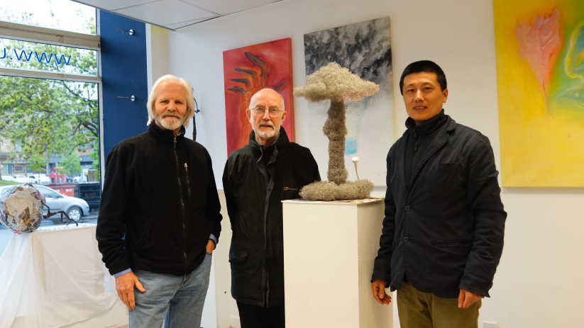poster
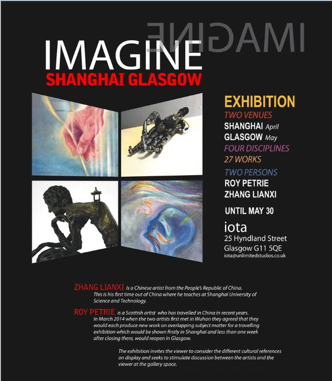Next: Brenton Mark Rossow, Previous: Lianxi Zhang, Up: Project team members [Contents]
HARRISON SEE - 习海瑞 b. 07/06/1990 Email: harrisonsee@live.com Web: http://www.harrisonsee.com/ Biography Harrison See is an artist from Perth, who originally came from an industrial design background until several years ago when he made the decision to shift his focus from manufacturing to the visual arts. See has experimented with many artistic mediums though predominately identifies himself as a painter, while occasionally returning to sculpture, drawing on his years of 3D design experience. See most recently graduated from Edith Cowan University with First Class honours, while also being presented with The Louise Macfie Painting Prize. He was also awarded one of the prestigious New Colombo Plan (NCP) Scholarships by the Federal Government of Australia, which allowed him to live and paint in Shanghai for six months. This scholarship will also fund Harrison See’s return to China in early 2017 where he will carry out a three-month long artist residency at the Chinese European Art Centre (CEAC) in Xiamen. Education 2016 Bachelor of Arts (Honours – First Class), Edith Cowan University, WA 2015 Bachelor of Arts (Visual Arts), Edith Cowan University, WA Printing Technology and Chinese Culture Internship, 上海出版印刷高等专科学校 Level 1 Mandarin (Chinese) Language studies, Confucius Institute, Claremont, WA 2011 Thermwood™ Advanced 3D CNC Programing and Machining Course, Belmont, WA 2010 Bachelor of Arts (Design), Majoring in Industrial Design, Curtin University, WA Awards 2015 The Louise Macfie Painting Prize (Edith Cowen University) New Colombo Plan (NCP) Scholarship (Federal Government of Australia) New Colombo Plan (NCP) Student Mobility Grant (Federal Government of Australia) 2010 Design Award for Excellence (Curtin University) Solo Exhibitions 2017 (TBC), Chinese European Art Centre (CEAC), Xiamen, China - [upcoming, May] 2016 The Nature of Wanting, Studio 281, Maylands, WA Solo Showcases 2016 A Cosmopolitan Landscape, 上海理工大学, (1100 campus painting studio), Shanghai 2015 Suggestive Function, Spectrum Breathing Space, Mount Lawley, WA Twelve Abstracts, Spectrum Hanging Space, Mount Lawley, WA Residencies 2017 Chinese European Art Centre (CEAC), Xiamen, China - [upcoming, May] Joint Exhibitions 2017 New State, Turner Galleries, Northbridge, WA - [upcoming, July] Selected Group Exhibitions 2017 Stations of the Cross 2017, Wesley Church, Perth, WA [upcoming, April] 2016 Third Space Project, Hujiang Gallery , Shanghai, China Variant II, Print Exchange, [Washington, USA – Western Australia, Australia] Signature, The Rosemount, Mount Lawley, WA Deloitte Spring Rose Art Show, Brookfield Place, Perth, WA ArtsHum 2016, Edith Cowan University, Mount Lawley, WA 2015 Impact 9 International Printmaking Conference, 中国美术学院, Hangzhou, China Transit Lounge, Edith Cowan University, Mount Lawley, WA Sculpture Survey, Gomboc Gallery and Sculpture Park, Middle Swan, WA Abridged, Spectrum Project Space, Mount Lawley, WA Sculpture Survey, Gomboc Gallery and Sculpture Park, Middle Swan, WA Drift Installation Art Awards, Mandurah, WA Variant I, Print Exchange, [Washington, USA – Western Australia, Australia] City of Stirling Biennial Art Award, Karrinyup, WA Deloitte Spring Rose Art Show, Brookfield Place, Perth, WA A4 Art Australia, Herring Island Gallery, Melbourne, VIC 4.115 Exhibition, Edith Cowan University, Mount Lawley, WA Nurture Nepal Exhibition, Basement Gallery, Perth, WA City of Melville Art Awards, Booragoon, WA 2014 Flourish, Edith Cowan University, Mount Lawley, WA Deloitte Spring Rose Art Show, Brookfield Place, Perth, WA Sculpture Survey, Gomboc Gallery and Sculpture Park, Middle Swan, WA 2013 Hub-Bub, Cowan University, Mount Lawley, WA Relevant Professional Experience 2016 Member of New State Artist Collective with Artist Aliesha Mafrici Council Member of The ECU Visual Arts Collective (EVAC) – ECU Student Guild Club Gallery Attendant at Spectrum Project Space, Mount Lawley, WA 2015 3D Design tutor, Applecross Senior High School, GATE Visual Arts Program Curator of The 4.115 Exhibition, Edith Cowan University, Mount Lawley, WA Gallery Attendant, Spectrum Project Space, Mount Lawley, WA Guest lecturer, Edith Cowan University, 3D Design Department, Mount Lawley, WA Ran workshops, Edith Cowan University, 3D Design Department, Mount Lawley, WA 2014 Guest lecturer, Edith Cowan University, 3D Design Department, Mount Lawley, WA 2013 – pres. 2D & 3D Draftsman, Designer and Manufacturing Consultant, Harrison See Design, WA 2012 – 2013 Senior Industrial Designer, Superline Group, Kewdale, WA 2010 – 2012 Industrial Designer, Superline Group, Kewdale, WA Support Material Articles: http://www.ecu.edu.au/schools/arts-and-humanities/spectrum-project-space/news-and-events/spectrum/2016/04/the-nature-of- wanting-student-exhibition New Colombo Plan Scholarship (NCP): http://foreignminister.gov.au/releases/Pages/2015/jb_mr_151201.aspx
2015 - HARRISON SEE - THE NATURE OF WANTING - OIL ON PLYWOOD
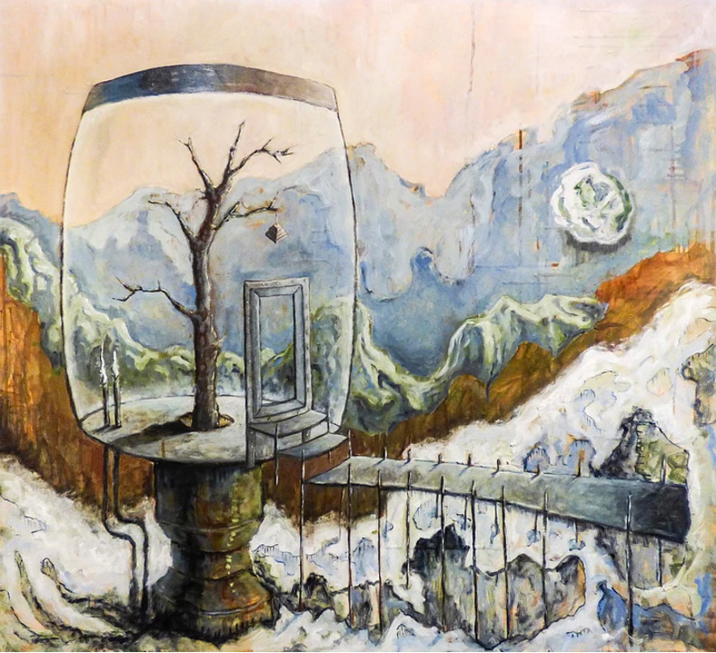2015 - HARRISON SEE - VALLEY OF AIR AND LIGHT - OIL ON CANVAS
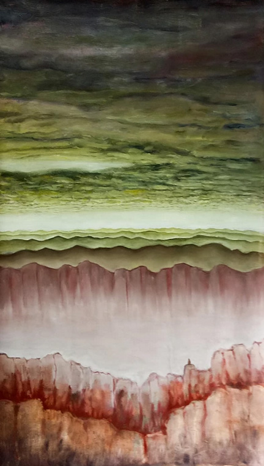2015 - HARRISON SEE - VALLEY OF STONE AND WATER - OIL ON CANVAS
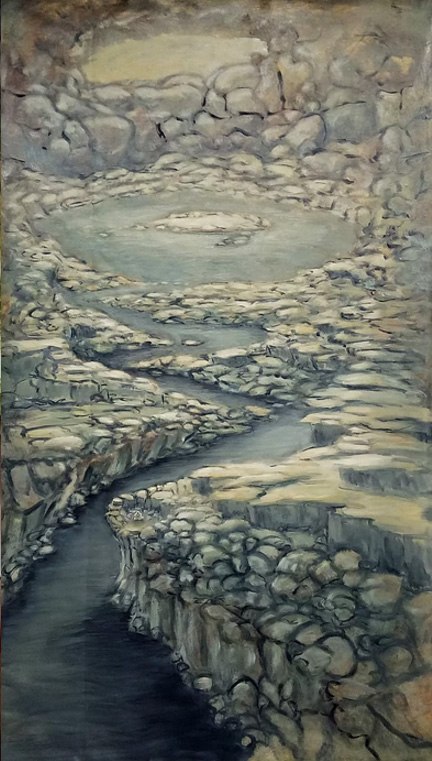2015 - HARRISON SEE - WATCHING THE SUNRISE I - OIL ON CANVAS
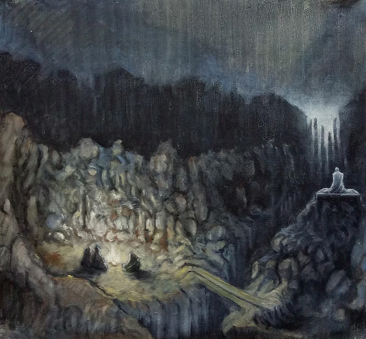2016 - HARRISON SEE - AFTR THE CLIMBE - OIL ON CANVAS
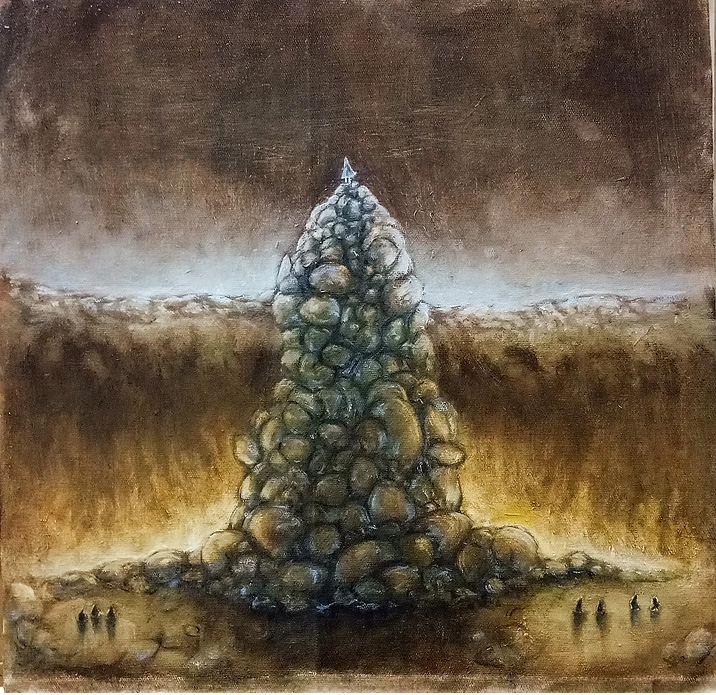Previous: Harrison See, Up: Project team members [Contents]
b. 25/05/1976 Email: brossow@our.ecu.edu.au Biography Brenton Rossow is a musician, writer, photographer, and filmmaker, who lived and worked in South East Asia for many years. From 2011 – 2014, Rossow recorded a number of albums with the Laotian Army Band whilst pursing other varied creative projects. In 2011, he had his first solo photography exhibition at Burpha University Thailand, and has since been involved in several group exhibitions in Shanghai and Perth. As a writer his works have been published in both print and online. Rossow taught English at Burapha University in Thailand from 2000 – 2014, but returned to Australia to complete a Bachelor of Arts in Creative Industries with a double major in Film and Video and Photomedia in 2016. He is currently studying honours in Film and Video at Edith Cowan University, Perth Australia, and participating in an arts residency at the University of Shanghai Science and Technology. Education 2016 Bachelor of Arts (Creative Industries), Edith Cowan University, WA 2007 Diploma in Teaching English to Speakers of Other Languages (TESOL), London Teacher Training College, UK 2007 Certificate in Practical English Language Teaching (TESOL), TEFL International, UK 2000 Diploma of Applied Science (Photography), Central Metropolitan College of Tafe, WA Solo Exhibitions 2011 Surrealism, Burapha University Gallery, Chonburi, Thailand Group Exhibitions 2015 Shanghai Street Photography, Gehui’s Studio, Shanghai, China 2016 Breathe, Huijian Gallery, Shanghai, China 2016 Breathe, Gallery 25, Perth, Australia 2016 Screenophilla, ECU Spaces, Perth, Australia Music Albums 2017 Bubblefunk & The Folding Chairs, Bubblefunk & The Folding Chairs, Thailand, Laos & UK 2014 Morlum Falang, The Folding Chairs, Thailand & Laos 2013 Mysterious Clubs, The Folding Chairs, Thailand & Laos 2012 Combover Kid, The Folding Chairs, Thailand & Laos 2012 Cockrocking Seasides, The Folding Chairs, Thailand & Laos 2011 Ben Franklin Wigs, The Folding Chairs, Thailand & Laos 2009 Boat Hotel, The Folding Chairs, Thailand Work Online 2013 East Lit: http://www.eastlit.com/eastlit-issue-two/eastlit-january-2013-content/two-poems-2/ 2011 Narrative Magazine: http://narrativemagazine.com/authors/brenton-rossow 2011 Jersey Works: http://www.jerseyworks.com/rossow.html 2010 Cha: An Asian Literary Magazine: http://www.asiancha.com/content/view/623/248/ 2010 Convergence Literary Journal: http://www.convergence-journal.com/spring10/s10p2.html 2010 Pif Magazine: http://www.pifmagazine.com/2010/08/grasshopper-penthouse-magazine/ 2009 DecomP Magazine: http://www.decompmagazine.com/august2009poetry.htm#brentonrossow 2009 Dogzplot: http://dogzplotfiction.blogspot.com/2009/10/brenton-rossow.html 2009 Everyday Genius: http://www.everyday-genius.com/2009/07/brenton-rossow.html 2009 Lit Up Magazine: http://litupmagazine.wordpress.com/tag/brenton-rossow/ 2009 Unlikely 2.0: http://www.unlikelystories.org/09/rossow1009.shtml 2009 Sein Und Werden: http://www.kissthewitch.co.uk/seinundwerden/3_3/page9.html Music Online 2009 Triple J Unearthed: http://www.triplejunearthed.com/artists/View.aspx?artistid=31601 2009 Unlikely 2.0: http://www.unlikelystories.org/09/foldingchairs0909.shtml Work in Print Journals 2010 Best of Asian Erotica 2: http://www.amazon.com/Best-Asian-Erotica-Vol-ebook/dp/B00593YUWM 2010 Frog Pond The Journal of the Haiku Society of America: (Volume 33, Number 1, Winter 2010): http://www.hsa-haiku.org/frogpond/2010-issue33-1/index.html 201) Qwerty Magazine: University Of New Brunswick Canada: http://www.lib.unb.ca/Texts/QWERTY/Spring_10/index.php 2010 Weyfarers’ Poetry Magazine: http://www.weyfarers.com/index.html Professional experience 2000 – pres Member of the Folding Chairs (music group), Thailand & Laos 2000 – 2014 English teacher, AUA Language Center, Burapha University, Thailand 2008 – 2009 Editor, Octopus Beak Inc. Literary Journal, South East Asia 2004 Part time English teacher, Assumption College Siracha, Thailand 2001 Part time English/Art teacher, Piboonbumpen Demonstration School, Thailand.
pic1
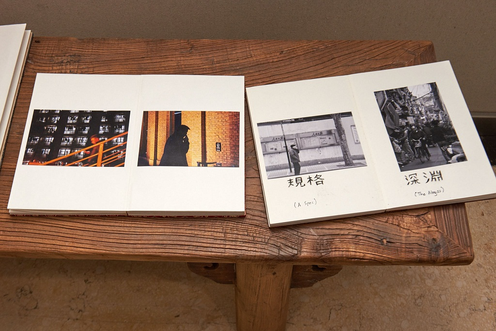pic2
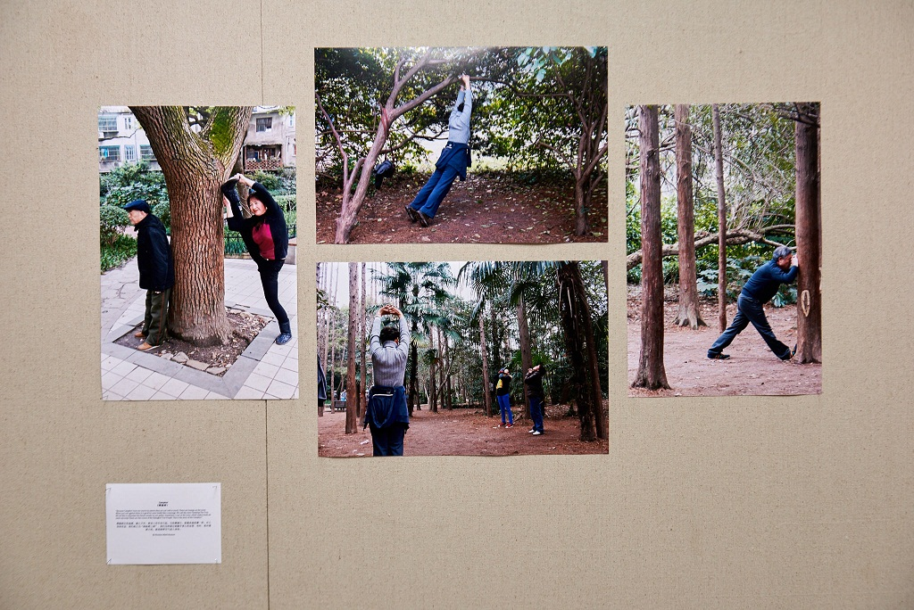pic3
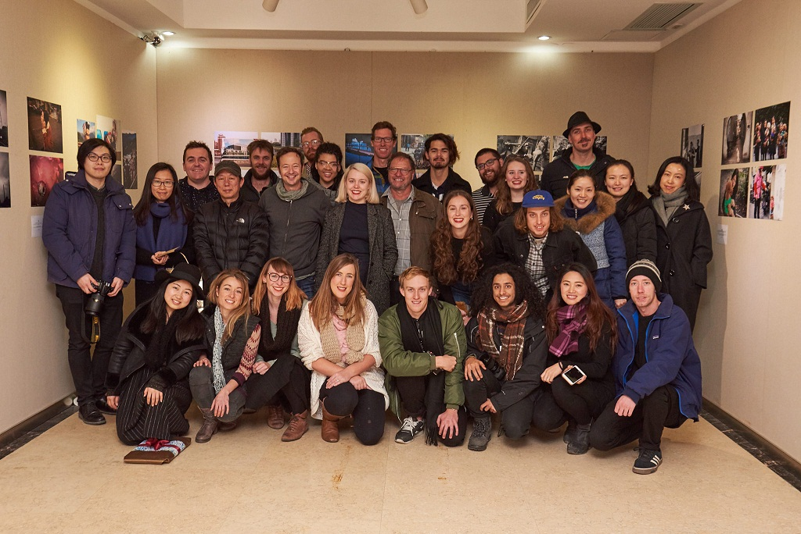pic4
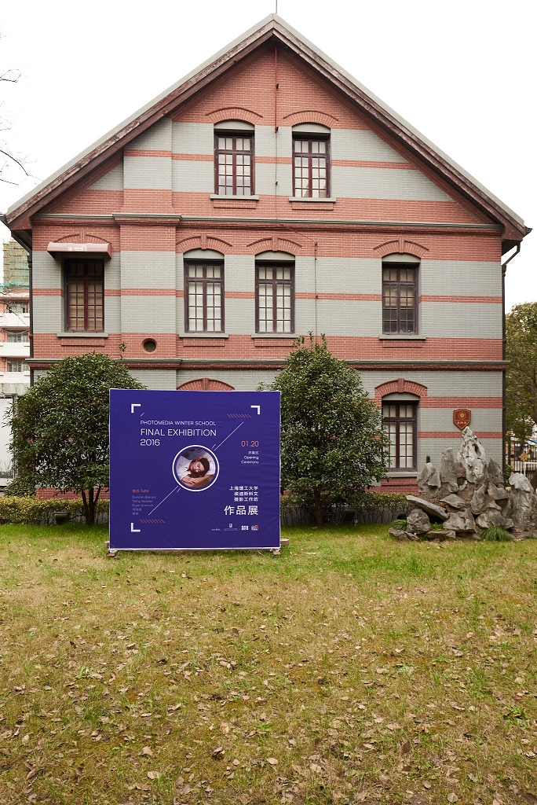pic5
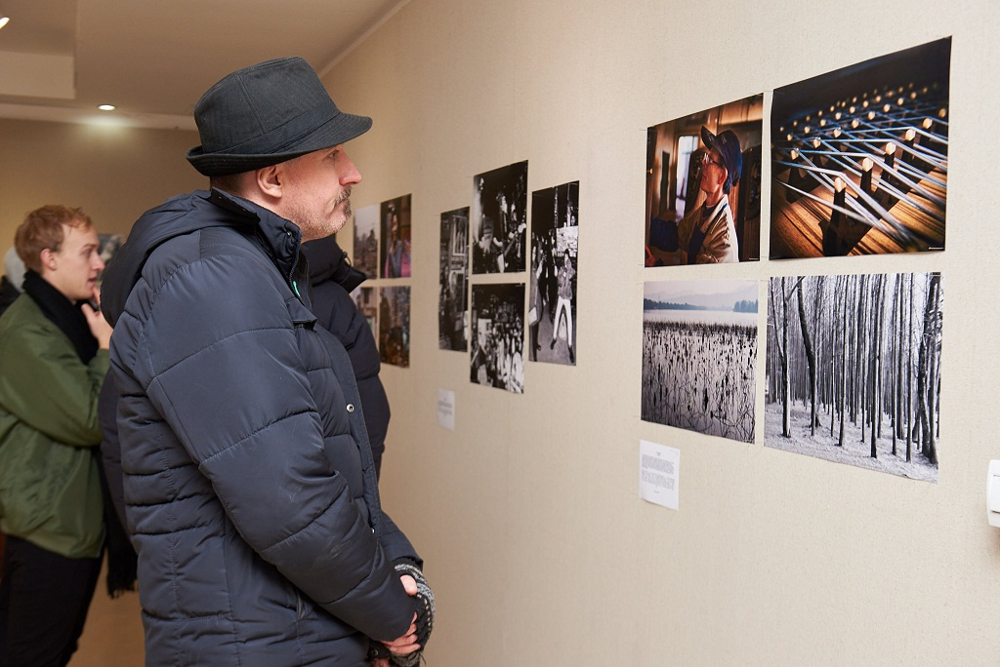Previous: Project team members, Up: Top [Contents]
| • pictures : | There are some pictures | |
| • video : | video |